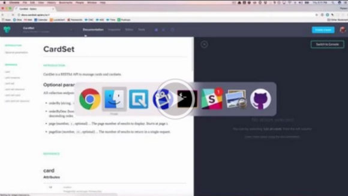

Documenting Your API
2017-01-30
tl;dr
Apiary provides a web-based editor, viewer, and mocking server for your API documentation.

Transcript
- Create Apiary Blueprint
- Create account
- Create new Blueprint named “cardset”
- Describe Blueprint format
- Format
- Host
- Markdown-like
- Use Apiary console to hit blueprint
- Describe other Apiary features
- Documentation
- Inspector
- Tests
- Team
- Settings
- CORS
- Proxy
- Rewrite for cardset collections
- Define headings for the card collection (get, post) and a card resource (get, put, delete)
- Define attributes for an object in the card collection
- Use attribute response for getting the card collection
- Return an array of card objects
- Response will be empty the first time. Rename the collection
- Response now has data.
- Include three card objects in the response. Sorry they are duplicates.
- You can define custom objects if you need variety, but we can use pg-restify for this.
- Define the POST /card service
- We do not include id since database will determine value
- Optional attributes should be indicated. Apiary will not enforce.
- Define the /card/{id} services
- Define parameters. Use backticks for example values.
- Define GET method.
- Define PUT method. Same as POST but with 200.
- Define DELETE method. Just a 200.
- Document should now be valid
- Sometimes highlighting is weird because of extra space
- Comments
- dash for attributes
- ellipses for a parameters
- Export Apiary Blueprint
- Copy/paste is simple. Save in your docs folder.
- Atom package for validating blueprints.
- GitHub sync is possible, but I prefer not to use.
- Define card-set collection
- Duplicate your card stuff and rename object to card-set
- Update attributes to only be name
- Define card-set-card collection
- Duplicate your card stuff and rename object to card-set
- Update attributes
- Describe what REST for this collection does in reality — add a card to a deck type or remove from a card set type
- Remove unnecessary PUT and GET methods for a card set card resource
- Use GET in Postman to see all card set card records This will become a scaling problem.
- Optional parameters for pagination
- Add orderBy as an optional parameter for card-set-card collection. Look at pg-restify docs to copy/paste.
- Add the other optional parameters.
- This gets a bit gross and repetitive, so let’s move to the Introduction section. Modify formatting.
- Remove optional parameters from the card-set-card collection docs
- Apiary often gets slow, so you can edit this stuff in Atom.
- api-blueprint-preview
- npm install -g aglio
- ctrl+shift+a
- language-api-blueprint
- linter-api-blueprint
- Put your blueprint into your server repository docs folder
- Try some requests with Postman
- Use heroku local or use your deployed services
- orderByDesc=true
- pageSize=2
- pageSize=2&page=2